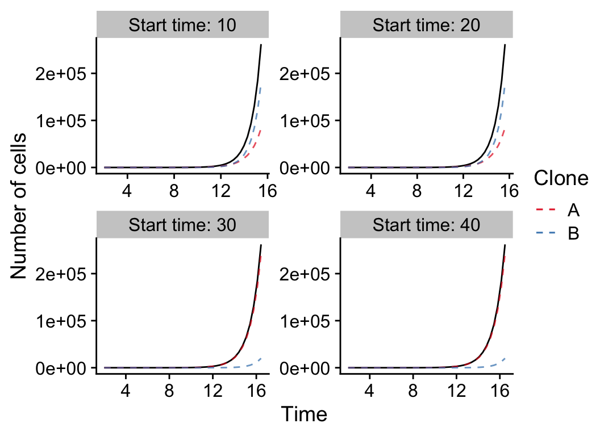

Time series data
time_series.Rmdlibrary(TEMULATOR) library(cowplot) #> #> ******************************************************** #> Note: As of version 1.0.0, cowplot does not change the #> default ggplot2 theme anymore. To recover the previous #> behavior, execute: #> theme_set(theme_cowplot()) #> ******************************************************** library(ggplot2) library(dplyr) #> #> Attaching package: 'dplyr' #> The following objects are masked from 'package:stats': #> #> filter, lag #> The following objects are masked from 'package:base': #> #> intersect, setdiff, setequal, union library(gganimate) theme_set(theme_cowplot())
Neutral tumours with variable death rates
# fixed parameters, a neutral tumour: fixed_clone_params_neutral = data.frame( birthrate = 1, mutationrate = 1, start_time = 0, father = 0 ) # varied parameters: n_reactions = 1:1000 seeds = 1:5 deathrates = c(0, 0.1, 0.25, 0.45)
# create all simulations: all_results_neutral = NULL for (dr in deathrates) { for (s in seeds) { this_params = fixed_clone_params_neutral %>% mutate(deathrate=dr) sim = new(TEMULATOR_object, this_params, 0, 100, s) # construct temulator object for (n in n_reactions) { sim$end_time = n # 1) update the end time sim$run(FALSE) # 2) run forward, not verbose result_this_simulation = data.frame( reactions=sim$n_reactions, t=sim$simulation_time, cells=sum(sim$cell_counts), seed=s, dr=dr ) all_results_neutral = rbind( all_results_neutral, result_this_simulation ) } } }
all_results_neutral %>% ggplot(aes(x=t, y=cells, group=seed)) + geom_line(alpha=0.7, color="gray10") + scale_color_brewer(palette="Set1") + xlab("Time") + ylab("Number of cells") + guides(color=FALSE) + facet_wrap(~paste0("Deathrate: ", dr), ncol=2, scales="free")
One subclone with variable higher birth rate
# fixed parameters, a non-neutral tumour: fixed_clone_params_selection = data.frame( birthrate = c(1, 1.3), mutationrate = c(1, 1), father = c(0, 0), deathrate = c(0,0) ) # varied parameters: n_reactions = unique(round(2^seq(from=0, to=18, by=0.5))) seeds = 1 start_times = c(10, 20, 30, 40)
# create all simulations: all_results_selection = NULL for (st in start_times) { for (s in seeds) { this_params = fixed_clone_params_selection %>% mutate(start_time=c(0, st)) sim = new(TEMULATOR_object, this_params, 0, 100, s) for (n in n_reactions) { sim$end_time = n # 1) update the end time sim$run(FALSE) # 2) run forward, not verbose result_this_simulation = data.frame( reactions=sim$n_reactions, t=sim$simulation_time, cells=sum(sim$cell_counts), clone1=sim$cell_counts[1], clone2=sim$cell_counts[2], seed=s, start_time=st ) all_results_selection = rbind( all_results_selection, result_this_simulation ) } } }
all_results_selection %>% mutate(clone2=ifelse(is.na(clone2), 0, clone2)) %>% ggplot(aes(x=t, y=cells, group=seed)) + geom_line(alpha=1.0) + geom_line(alpha=0.7, aes(color="A", y=clone1), linetype=2) + geom_line(alpha=0.7, aes(color="B", y=clone2), linetype=2) + scale_color_brewer(palette="Set1") + xlab("Time") + ylab("Number of cells") + labs(color="Clone") + facet_wrap(~paste0("Start time: ", start_time), ncol=2, scales="free")

Sequencing samples showing a selective sweep
# fixed parameters, a non-neutral tumour: fixed_clone_params_sample = data.frame( birthrate = c(1, 1.3), mutationrate = c(10, 10), father = c(0, 0), deathrate = c(0, 0), start_time = c(0, 40) ) seed = 1 # varied parameters: n_reactions = unique(round(2^seq(from=0, to=25, by=0.5))) # parameters for sequencing min_vaf = 0.05 # 1% limit of detection depth = 100 # 100x mean coverage depth_model = 1 # poisson distribution purity = 1.0 # a pure tumour
clone_f_selection_sweep = NULL samples_selection_sweep = NULL # create temulator object sim = new(TEMULATOR_object, fixed_clone_params_sample, 0, 100, seed) for (n in n_reactions) { # update simulation sim$end_time = n # 1) update the end time sim$run(FALSE) # 2) run forward, not verbose # cell count data cell_counts_this = data.frame( reactions=sim$n_reactions, time=sim$simulation_time, cells=sum(sim$cell_counts), clone1=sim$cell_counts[1], clone2=sim$cell_counts[2], seed=s, start_time=st ) %>% mutate(clone2=ifelse(is.na(clone2), 0, clone2)) # sequencing data sample_this = # (see ?simulateTumour for details) sim$sample_seeded(min_vaf, purity, depth, depth_model, seed) %>% mutate(vaf = alt/depth) %>% mutate(n_reactions = n) %>% mutate(time = sim$simulation_time) # append data to result sets clone_f_selection_sweep = rbind(clone_f_selection_sweep, cell_counts_this) samples_selection_sweep = rbind(samples_selection_sweep, sample_this) # break loop if full sweep of subclone observed? if (cell_counts_this$clone2 / cell_counts_this$cells > 0.9) break() }
plot_selection_sweep = samples_selection_sweep %>% mutate(mlabel=TEMULATOR:::assign_mutation_label(.)) %>% ggplot(aes(x=vaf, fill=factor(mlabel))) + geom_histogram(breaks=seq(from=min_vaf, 1, by = 0.01)) + scale_fill_brewer(palette = "Set1") + xlab("VAF") + ylab("Number of mutations") + labs(fill="Cluster") + labs(title="Selective sweep") + labs(subtitle = "t = {signif(frame_time, 2)}") + xlim(-0.01, 1.0) + transition_time(time) plot_selection_sweep = plot_selection_sweep + # box marking limit of detection geom_polygon(data=data.frame(x=c(0, 0, min_vaf, min_vaf), y=c(0, Inf, Inf, 0)), aes(x=x,y=y), fill="gray90", inherit.aes = FALSE) + # line showing expected VAF of subclone geom_vline(data=clone_f_selection_sweep, aes(xintercept=clone2 / cells * 0.5), linetype=2, color="gray20") + # label of subclone line geom_text(data=clone_f_selection_sweep, aes(x=clone2 / cells * 0.5 + 0.025), label=factor("Exp. VAF subclone"), hjust=0, vjust=0.5, y=25, color="gray20", inherit.aes = FALSE) animate(plot_selection_sweep, width=380, height=220)